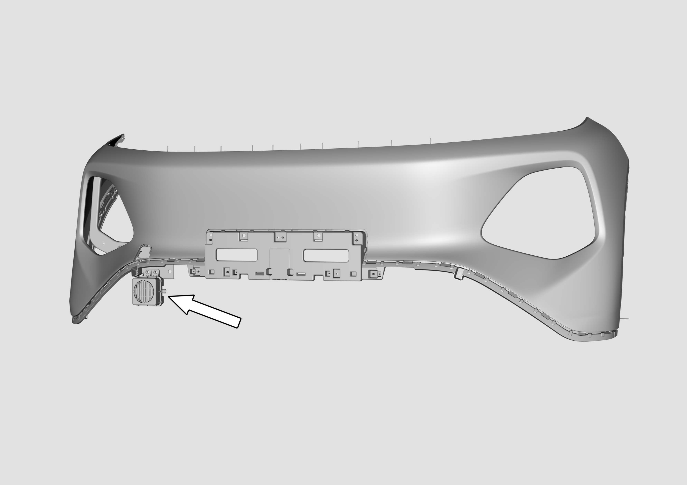
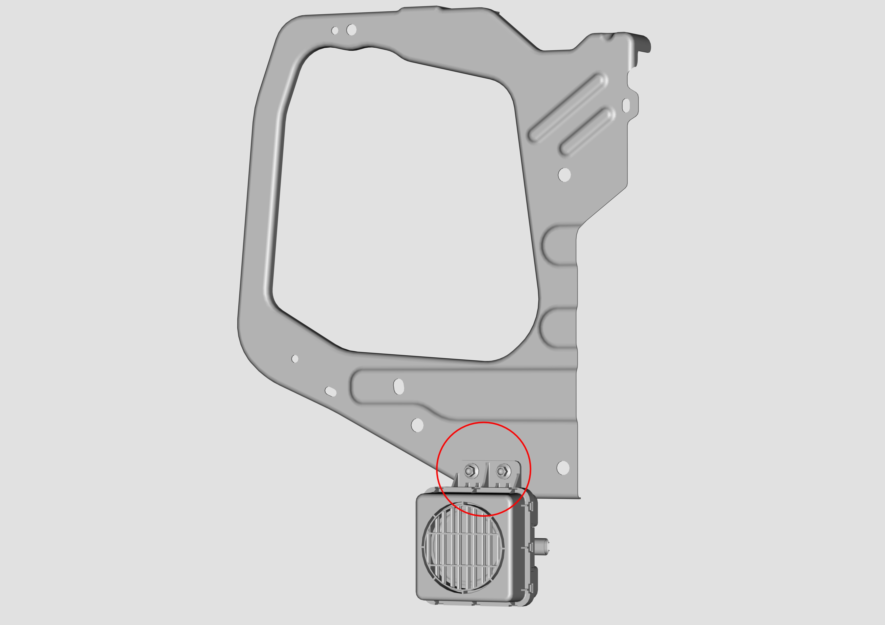

Передача питания автомобиля находится в положении OFF, при этом отсоединить отрицательный вывод Аккумуляторная батарея автомобиля;
С помощью подходящего инструмент демонтировать узел переднего бампера и принадлежности;

С помощью торцевой головки M8 выкрутить гайку крепления динамика предупредительного звукового сигнала при движении на малой скорости, расположенного на монтажном кронштейне фары со стороны пассажира;

Установка выполняется в порядке, обратном снятию.